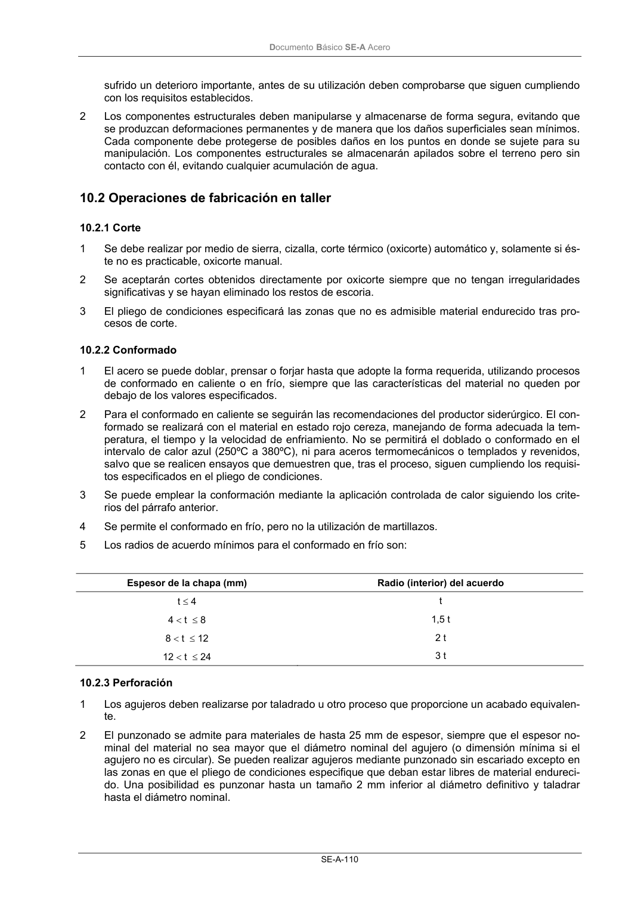

DB-SE-A · 10.2.3 Perforación · versión 2007-10-23 · capa oficial
Formatos: JSON compacto · Markdown · PDF fuente
Ámbito del documento · texto del ámbito · documento y tablas
ID técnico a0157 · PDF pág. 112-113 · jerarquía no validada por persona · contrastado con el literal de la página 112 (candidato tipográfico); no validado por persona · padre: raíz
10.2.3 Perforación 1 Los agujeros deben realizarse por taladrado u otro proceso que proporcione un acabado equivalen- te. 2 El punzonado se admite para materiales de hasta 25 mm de espesor, siempre que el espesor no- minal del material no sea mayor que el diámetro nominal del agujero (o dimensión mínima si el agujero no es circular). Se pueden realizar agujeros mediante punzonado sin escariado excepto en las zonas en que el pliego de condiciones especifique que deban estar libres de material endureci- do. Una posibilidad es punzonar hasta un tamaño 2 mm inferior al diámetro definitivo y taladrar hasta el diámetro nominal. DocumentoBásico SE-A Acero SE-A-111 3 Los agujeros alargados se realizarán mediante una sola operación de punzonado o mediante tala- drado o punzonado de dos agujeros y posterior oxicorte. 4 Las rebabas se deben eliminar antes del ensamblaje, no siendo necesario separar las diferentes partes cuando los agujeros están taladrados en una sola operación a través de dichas partes uni- das firmemente entre sí. 5 El avellanado se realizará tras el taladro o punzonado del agujero normal.

PDF fuente redistribuible: copia fiel enlazada en esta página (SHA256 verificado).